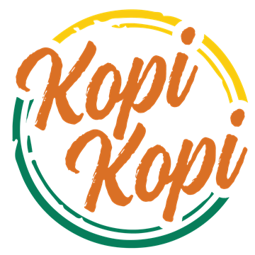
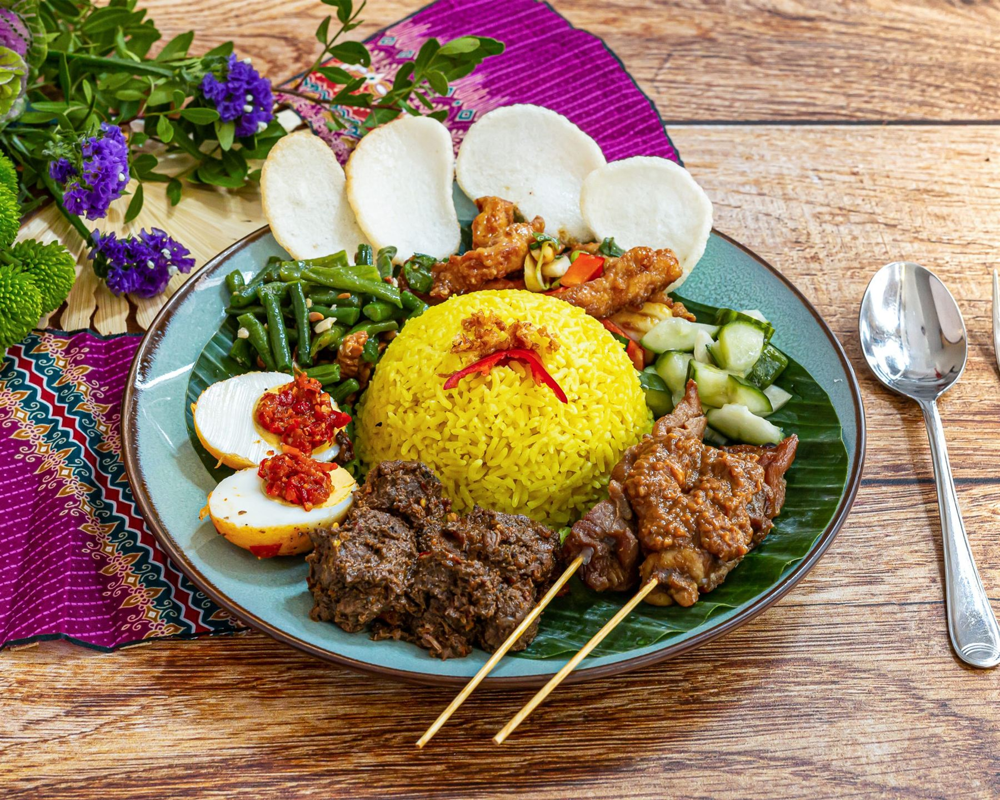
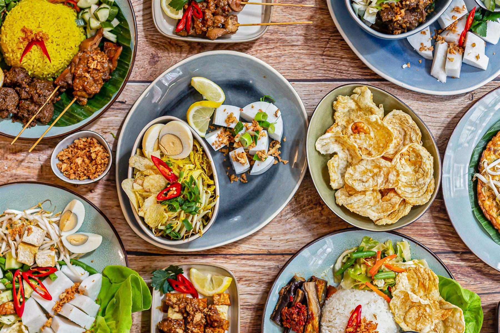
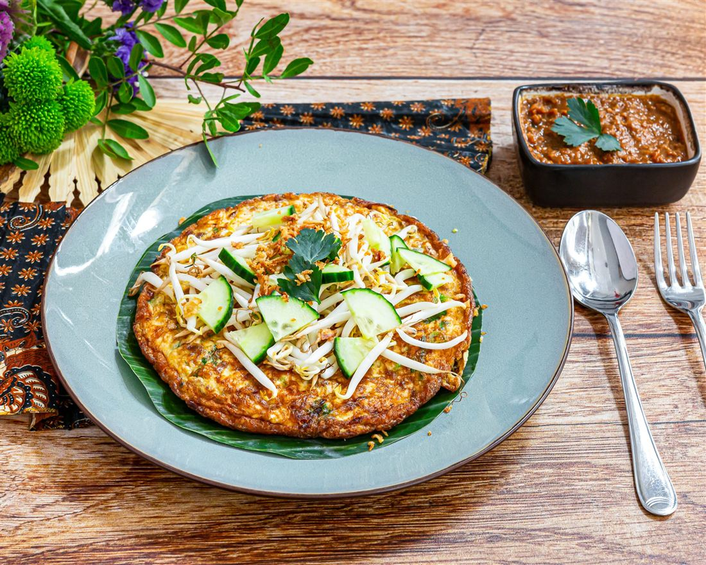
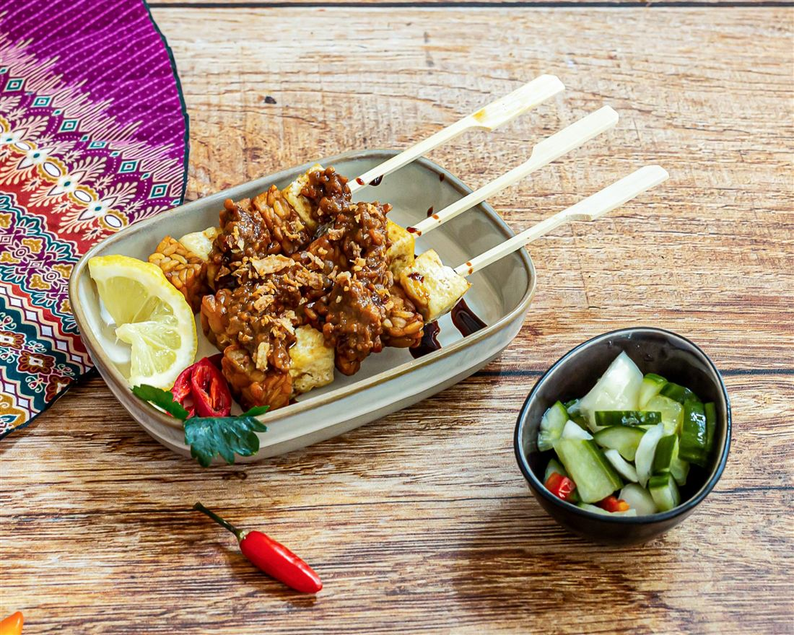
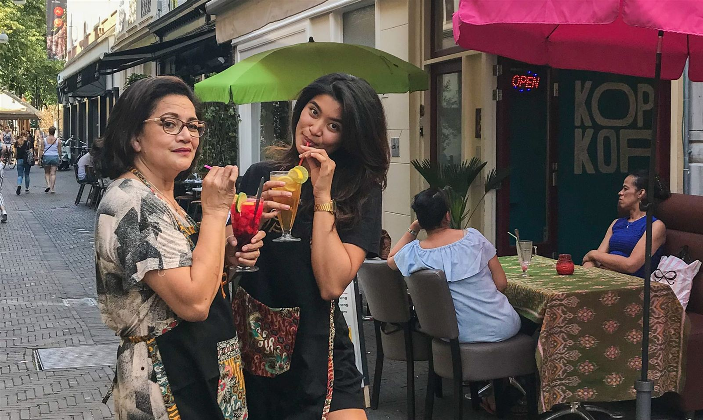

Lunch special
Ma t/m vr, 12.00 tot 14.00
Nasi, een rundvlees- of kipgerecht, groente en kerupuk. Breek lekker de dag.
v.a. € 12,50

Reserveer: 070 412 6133
Een knus restaurant in de Korte Houtstraat, met traditionele gerechten uit Jakarta. Met liefde bereid, halal, en met volop keuze voor vegetariërs en veganisten.
Ma t/m vr vanaf 12.00, za vanaf 14.00, zondag gesloten
Selamat datang. Bij Kopi Kopi zetten we ons in voor meer dan een maaltijd of een warm welkom: we laten je een stukje Indonesië ervaren, zoals wij het gewend waren toen we nog in Jakarta woonden.

Naast het menu hebben we doorlopende acties. Acties zijn niet in combinatie geldig.
Ma t/m vr, 12.00 tot 14.00
Nasi, een rundvlees- of kipgerecht, groente en kerupuk. Breek lekker de dag.
v.a. € 12,50
Ma t/m vr, 12.00 tot 17.00
Gado gado, sate ayam of vega (3 stokjes) en lontong, of nasi of bami goreng met sate ayam of vega (3 stokjes).
v.a. € 12,50
Dan trakteren wij jou op een huisgemaakte Indonesische zoete verrassing: een Indotreat van mama Debby.
Iemand verrassen met traditioneel Indonesisch eten? Bestel onze kleurrijke cadeaubon via Gifty, kies het bedrag en ontvang hem direct per e-mail of op de deurmat.
Vraag naar de cadeaubon

Je kunt niet alleen gezellig bij ons plaatsnemen, maar ook je favoriete gerechten afhalen. Voor afhalen gelden voordeligere prijzen. Bezorging gaat via UberEats.
Bestel telefonisch: 070 412 6133Traditionele Indonesische snacks, hartig en zoet, huisgemaakt door mama Debby. Van lumpia en lemper tot lapis legit. Bestel ze los of stel je eigen Indotreats box samen: 12 stuks met 10% korting.
Bekijk alle IndotreatsVoor Den Haag en omstreken verzorgen we Indonesisch eten voor diverse gelegenheden: van een bescheiden etentje met familie en vrienden thuis tot een groot feest in een afgehuurde zaal. Jij vraagt, wij leveren, met duidelijke afspraken zodat niemand tekortkomt.
Vraag naar de mogelijkheden
In het sfeervolle centrum van Den Haag vind je ons knusse restaurant. Hier bereiden we met veel liefde traditionele Indonesische gerechten en hechten we waarde aan Indonesische gastvrijheid, zoals we dat gewend waren toen we nog in Jakarta woonden.
Het menu staat vol smaakvolle, kleurrijke gerechten: van Indotreats en warme soepjes tot complete schotels en uitgebreide rijsttafels. Om van te genieten in je eentje of met de hele familie.
We had a lovely lunch here, there was a good selection of vegetarian and other dishes. Portions were good, filling and you had an option to choose smaller plates which was handy for younger people. The service was great too, she explained everything in detail and helped us make a choice.
I tried the miso and it was delish. The cendol also so authentic taste. And the best part they HAVE original Indonesian spekkoek! Lapis legit!
Incredibly delicious! We had the Rames Kopi Kopi special which is a selection of a few dishes and rice, a great way to taste a number of different dishes. Amazing flavours, definitely a foodie highlight.
Reserveren kan op dit moment alleen telefonisch, tijdens openingstijden. Ook voor groepsreserveringen, catering of vragen over onze gerechten helpen we je graag.
Bel 070 412 6133| maandag | 12.00 - 20.00 |
|---|---|
| dinsdag | 12.00 - 20.00 |
| woensdag | 12.00 - 20.00 |
| donderdag | 12.00 - 21.00 |
| vrijdag | 12.00 - 20.00 |
| zaterdag | 14.00 - 20.00 |
| zondag | gesloten |
Vanaf Den Haag Centraal ben je er in circa 5 tot 7 minuten.